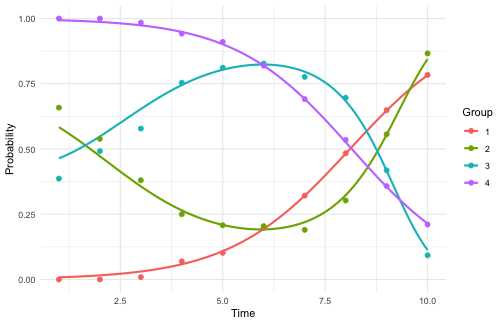
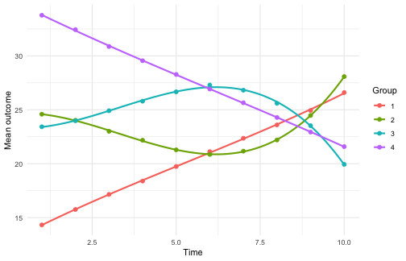

gbtmkit turns group-based trajectory modelling (GBTM)
into a reproducible pipeline that follows the GRoLTS reporting
checklist. Estimation is delegated to interchangeable backends – a
built-in native engine ("gbtmkit", the default) and the
established trajeR, flexmix, and
lcmm packages – behind one interface: every fitting
function takes an engine argument, and the fit diagnostics
(entropy, APPA, OCC, group proportions) are computed the same way
regardless of engine, for binary and continuous outcomes alike.
The examples below all use the default native engine; the Choosing an engine section at the end
compares and benchmarks the backends and shows how to switch. Along the
way we turn the finished result into a GRoLTS reporting aid
(grolts_report()), escape a local optimum with multi-start
initialisation (n_starts), and predict group membership
from covariates (gbtm_spec(covariates = ...)).
The data
The package ships two entirely synthetic datasets with known
ground-truth groups. sim_binary has a binary outcome
measured on ten occasions, with four latent trajectory shapes of mixed
polynomial order: a linear rising group, a cubic rise-peak-decline
group, a cubic decline-trough-recovery group, and a linear falling
group:
data("sim_binary", package = "gbtmkit")
head(sim_binary)
#> id x1 x2 y1 y2 y3 y4 y5 y6 y7 y8 y9 y10 t1 t2 t3 t4 t5 t6 t7 t8 t9 t10
#> 1 1 0.4618 3.01 1 1 1 1 1 1 1 1 0 1 1 2 3 4 5 6 7 8 9 10
#> 2 2 0.0972 2.49 0 0 0 0 0 1 1 1 1 1 1 2 3 4 5 6 7 8 9 10
#> 3 3 0.6760 2.28 1 1 1 1 1 1 1 0 0 0 1 2 3 4 5 6 7 8 9 10
#> 4 4 -0.7488 2.08 0 0 0 0 0 0 1 1 1 0 1 2 3 4 5 6 7 8 9 10
#> 5 5 1.0256 4.63 0 1 1 0 0 0 0 0 1 1 1 2 3 4 5 6 7 8 9 10
#> 6 6 -0.6966 4.24 1 1 1 1 1 1 1 0 1 0 1 2 3 4 5 6 7 8 9 10
#> true_group
#> 1 2
#> 2 1
#> 3 2
#> 4 1
#> 5 3
#> 6 4Describe the model with a spec
gbtm_spec() records what to model – the outcome
and time columns (by name), the id, and the outcome family – and
validates it, independent of which engine will fit it.
spec <- gbtm_spec(
sim_binary,
outcomes = paste0("y", 1:10),
time = paste0("t", 1:10),
id = "id",
family = "binomial"
)
spec
#> <gbtm_spec>
#> family : binomial
#> subjects : 1500
#> occasions : 10
#> outcomes : y1, y2, y3, y4, y5, y6, y7, y8, y9, y10
#> time : t1, t2, t3, t4, t5, t6, t7, t8, t9, t10
#> id : idRun the whole pipeline in one call
run_gbtm_pipeline() performs algorithm selection (when
the engine offers a choice), group-number selection, the
polynomial-shape search with GRoLTS acceptance criteria, and the final
Hessian-on fit. Here we use a small search to keep the vignette
quick.
res <- run_gbtm_pipeline(
spec,
candidates = 2:5, # consider 2 to 5 groups
degree = 2, # quadratic while choosing the number of groups --
# with curved shapes, linear-only selection under-selects
max_degree = 3, # allow up to cubic in the shape search
seed = 1,
verbose = FALSE
)
res
#> <gbtm_result>
#> engine/family : gbtmkit / binomial
#> method : EM
#> groups : 4
#> degrees : 1, 3, 3, 1
#> GRoLTS criteria met: TRUE
#> entropy : 0.759 BIC: 17109.9The pipeline recovers the four planted groups. Everything each stage produced is kept on the result object:
res$group_selection # BIC for each candidate number of groups
#> <gbtm_selection> stage=n_groups by=BIC
#> n_groups degrees bic aic ok
#> 2 2,2 17422.92 17385.72 TRUE
#> 3 2,2,2 17275.74 17217.30 TRUE
#> 4 2,2,2,2 17168.93 17089.23 TRUE
#> 5 2,2,2,2,2 17194.21 17093.26 TRUE
#> best: 4
summary(res)
#> === gbtm pipeline result ===
#> <gbtm_result>
#> engine/family : gbtmkit / binomial
#> method : EM
#> groups : 4
#> degrees : 1, 3, 3, 1
#> GRoLTS criteria met: TRUE
#> entropy : 0.759 BIC: 17109.9
#>
#> Group diagnostics:
#> group n_assigned prop_assigned prop_model mismatch appa occ
#> 1 333 0.222 0.204 -0.018 0.866 25.207
#> 2 284 0.189 0.210 0.021 0.893 31.457
#> 3 313 0.209 0.228 0.020 0.867 22.108
#> 4 570 0.380 0.357 -0.023 0.891 14.738
#>
#> Assigned group sizes:
#>
#> 1 2 3 4
#> 333 284 313 570Inspect and plot
gbtm_diagnostics() gives the GRoLTS classification
diagnostics, and plot_trajectories() draws the fitted group
trajectories with the observed per-group means overlaid.
res$diagnostics$groups
#> group n_assigned prop_assigned prop_model mismatch appa occ
#> 1 1 333 0.2220000 0.2038646 -0.01813543 0.8658558 25.20687
#> 2 2 284 0.1893333 0.2102101 0.02087676 0.8933063 31.45717
#> 3 3 313 0.2086667 0.2284620 0.01979536 0.8674872 22.10796
#> 4 4 570 0.3800000 0.3574633 -0.02253669 0.8912919 14.73752
plot_trajectories(res$final_fit)
plot of chunk unnamed-chunk-8
Per-subject group assignment (the analogue of exporting a group
column) is in res$assignment:
head(res$assignment)
#> id group p1 p2 p3 p4
#> 1 1 4 3.265315e-09 4.611098e-04 0.052880054 9.466588e-01
#> 2 2 1 9.496915e-01 4.249617e-02 0.007812277 3.560491e-08
#> 3 3 4 2.927023e-10 5.356235e-05 0.057881482 9.420650e-01
#> 4 4 1 9.596223e-01 2.885852e-02 0.011519114 2.528171e-08
#> 5 5 2 6.759531e-03 9.925507e-01 0.000676577 1.323316e-05
#> 6 6 4 9.585742e-10 1.193279e-04 0.073931256 9.259494e-01Report against the GRoLTS checklist
grolts_report() maps the finished pipeline result onto
the GRoLTS checklist (van de Schoot et al. 2017): items the pipeline can
answer – time metric, software, the shape search, starting values,
selection tools, class sizes, entropy – are filled in automatically, and
items only you can know (the missing-data mechanism, what appears in the
manuscript, syntax availability) are flagged with whatever context the
result contributes. Pass file = to also write the report as
a Markdown appendix for supplementary material.
grolts_report(res)
#> <gbtm_grolts_report> GRoLTS reporting aid (items paraphrased from
#> van de Schoot et al. 2017, doi:10.1080/10705511.2016.1247646)
#>
#> -- auto-filled from the pipeline result --
#> [1] Metric of time
#> 10 occasions (columns t1 .. t10); observed times span [1, 10].
#> [2] Time within waves
#> Fixed occasions: every subject shares the same times (1, 2, 3, 4, 5,
#> 6, 7, 8, 9, 10); within-wave variance is 0.
#> [4] Observed outcome distribution
#> Per-wave proportions: 0.59, 0.58, 0.57, 0.58, 0.58, 0.57, 0.53, 0.51,
#> 0.47, 0.44.
#> [5] Software
#> R version 4.6.1 (2026-06-24); gbtmkit 0.3.0.9000; engine gbtmkit
#> (gbtmkit 0.3.0.9000), method 'EM'.
#> [7] Alternative trajectory shapes
#> 17 polynomial shapes fitted (stepwise search, degrees 1..3 per
#> group); chosen degrees: 1, 3, 3, 1.
#> [8] Covariates
#> No covariates were used.
#> [9] Starting values / iterations
#> Final fit: single (default) initialisation; iteration cap 100. (This
#> engine's default initialisation is deterministic; additional starts
#> are k-means partitions.)
#> [10] Model selection tools
#> Group number selected by BIC over 2..5 groups; shapes screened with
#> GRoLTS acceptance criteria (min class share > 0.05, APPA > 0.7, OCC
#> >= 5).
#> [11] Number of models fitted
#> 24 models fitted in total (2 algorithm comparison, 4 group-number
#> candidates, 17 shape-search fits, 1 final fit). A one-class solution
#> was NOT among the candidates -- consider adding candidates = 1:K.
#> [12] Cases per class
#> Final 4-group model: n per class = 333, 284, 313, 570 (proportions
#> 0.22, 0.19, 0.21, 0.38). Per-candidate class sizes are not retained
#> by the pipeline.
#> [13] Entropy
#> Normalised classification entropy: 0.759 (APPA per class: 0.87, 0.89,
#> 0.87, 0.89).
#>
#> -- context supplied -- analyst completes --
#> [3c] Handling of missing data
#> No missing outcome values in the analysis data. Long-format engines
#> (flexmix, lcmm) drop missing occasions row-wise; trajeR receives the
#> NA matrix.
#> [6a] Within-class heterogeneity
#> Group-based trajectory model / latent class growth analysis: no
#> within-class random effects. Alternatives with within-class
#> heterogeneity (e.g. growth mixture models) were not fitted by this
#> pipeline; state whether they were considered.
#> [6b] Variance structure across classes
#> family = 'binomial': no free residual-variance structure to vary.
#> [14] Plot of final trajectories
#> Available via plot_trajectories(result$final_fit) (fitted group
#> trajectories with observed means); include it in the manuscript.
#>
#> -- analyst must supply --
#> [3a] Missing-data mechanism
#> Describe the assumed mechanism. No missing outcome values in the
#> analysis data.
#> [3b] Predictors of attrition
#> Describe which variables relate to attrition/missingness.
#> [15] Plots for each model / individual trajectories
#> The pipeline retains fits per candidate in
#> result$group_selection$fits; plotting each model (or individual
#> trajectories) is up to the analyst.
#> [16] Syntax availability
#> Share the analysis script (spec + run_gbtm_pipeline call) and
#> sessionInfo() as supplementary material.Run the stages individually
run_gbtm_pipeline() is a convenience wrapper. For full
control you can run each GRoLTS stage yourself and inspect the result
before moving on – this is exactly what the wrapper does internally.
Stage 1: choose the estimation algorithm
This stage applies to engines that offer several optimisers. The
default native engine offers two ("BFGS" and
"EM") and trajeR offers three
("L", "EM", "EMIRLS"); the
lowest-BIC one is selected. flexmix and lcmm
have a single optimiser and skip this stage automatically. BFGS and EM
maximise the same likelihood; on this small model they reach the same
BIC and the faster BFGS is kept, though on a harder model one can edge
out the other (the pipeline above selected EM):
algo <- select_algorithm(spec, n_groups = 2, degrees = c(1, 1), seed = 1)
algo
#> <gbtm_selection> stage=algorithm by=BIC
#> method bic aic ok
#> BFGS 17980.01 17953.44 TRUE
#> EM 17980.01 17953.45 TRUE
#> best: BFGSStage 2: choose the number of groups
The number of groups is chosen by BIC over a set of candidates. Quadratic shapes are used while sweeping: with curved trajectories like these, linear-only selection under-selects the number of groups:
groups <- select_n_groups(spec, candidates = 2:5, degree = 2, seed = 1)
groups
#> <gbtm_selection> stage=n_groups by=BIC
#> n_groups degrees bic aic ok
#> 2 2,2 17422.92 17385.73 TRUE
#> 3 2,2,2 17275.73 17217.28 TRUE
#> 4 2,2,2,2 17168.92 17089.22 TRUE
#> 5 2,2,2,2,2 17198.17 17097.22 TRUE
#> best: 4Stage 3: search polynomial shapes
The polynomial shapes are searched for the chosen number of groups, then the GRoLTS acceptance criteria (PMS > 0.05, APPA > 0.70, OCC >= 5) are applied:
shapes <- evaluate_shapes(spec, n_groups = groups$best,
max_degree = 3, seed = 1, verbose = FALSE)
apply_grolts_criteria(shapes)
#> <gbtm_criteria> PMS>0.05, APPA>0.70, OCC>=5 | 6 shape(s) pass
#> recommended: degrees 3,2,3,1 (BIC 17141.7, entropy 0.754)Stage 4: fit the final model
The final model is fit with the Hessian on, so the fit carries standard errors, and the diagnostics and per-subject assignment are read off it. Here we use the lowest-BIC shape found by the search:
fit <- fit_gbtm(spec, n_groups = groups$best, degrees = shapes$best, seed = 1)
gbtm_diagnostics(fit)
#> <gbtm_diagnostics> groups=4 n=1500 entropy=0.754
#> BIC=17141.73 AIC=17056.72 logLik=-8512.36
#> group n_assigned prop_assigned prop_model mismatch appa occ
#> 1 337 0.225 0.207 -0.017 0.866 24.618
#> 2 290 0.193 0.211 0.018 0.878 26.756
#> 3 303 0.202 0.221 0.019 0.864 22.516
#> 4 570 0.380 0.361 -0.019 0.897 15.395
head(gbtm_assign(fit))
#> id group p1 p2 p3 p4
#> 1 1 4 5.846693e-09 5.315735e-04 0.051537591 9.479308e-01
#> 2 2 1 9.300871e-01 6.282380e-02 0.007089053 4.094335e-08
#> 3 3 4 5.291590e-10 7.767643e-05 0.056226553 9.436958e-01
#> 4 4 1 9.312346e-01 5.878013e-02 0.009985201 2.896705e-08
#> 5 5 2 1.596779e-02 9.829723e-01 0.001033636 2.631241e-05
#> 6 6 4 1.724421e-09 1.782099e-04 0.071815472 9.280063e-01Continuous outcomes
The same pipeline handles continuous outcomes: switch the family to
"gaussian" and point the spec at a continuous dataset.
sim_continuous has the same four shape types on a
continuous scale. (Set ymin/ymax on the spec
for censored, Tobit-style outcomes; the native engine and trajeR both
support them.)
We fit cubic shapes in all four groups (in a real analysis the shape
search refines the per-group degrees, as above), with
n_starts = 3: from a single start this particular fit lands
in a degenerate local optimum with an empty group – exactly the failure
mode the next section demonstrates.
data("sim_continuous", package = "gbtmkit")
cspec <- gbtm_spec(
sim_continuous,
outcomes = paste0("y", 1:10),
time = paste0("t", 1:10),
id = "id",
family = "gaussian"
)
cfit <- fit_gbtm(cspec, n_groups = 4, degrees = rep(3, 4),
itermax = 400, seed = 1, n_starts = 3)
gbtm_diagnostics(cfit)$entropy
#> [1] 1plot_trajectories() works the same way; for a continuous
outcome the fitted lines and the observed points are on the outcome’s
own scale (means, not probabilities):
plot_trajectories(cfit)
plot of chunk unnamed-chunk-16
Local optima and multi-start initialisation
Mixture fits can land in a degenerate local optimum – an empty or
merged group is the telltale sign, and plot_trajectories()
/ gbtm_predict() warn when they see one. On this data,
forcing linear shapes with the "L" optimiser does
exactly that: one group comes out empty. (We use the trajeR engine here
to demonstrate; its behaviour motivated the feature.)
bad <- gbtm_fit(cspec, engine = "trajeR", n_groups = 4, degrees = rep(1, 4),
method = "L", itermax = 300, seed = 1)
table(factor(gbtm_assign(bad)$group, 1:4))
#>
#> 1 2 3 4
#> 313 0 566 321The standard defence is multi-start initialisation:
n_starts re-fits the model from several starting points and
keeps the best BIC. (For trajeR, whose default initialisation is
deterministic, the extra starts come from k-means partitions of the
subjects’ outcome vectors; flexmix re-runs its random EM initialisation;
lcmm delegates to lcmm::gridsearch().)
good <- gbtm_fit(cspec, engine = "trajeR", n_groups = 4, degrees = rep(1, 4),
method = "L", itermax = 300, seed = 1, n_starts = 5)
table(factor(gbtm_assign(good)$group, 1:4))
#>
#> 1 2 3 4
#> 259 307 321 313
c(single_start = gbtm_bic(bad), best_of_5 = gbtm_bic(good))
#> single_start best_of_5
#> 53012.35 52905.71All four groups are back, at a visibly better BIC.
n_starts is accepted by every fitting function and flows
through run_gbtm_pipeline() to all stages (it multiplies
the shape-search cost, which
max_fits/time_budget still bound). The
independent starts – and the candidate fits in the selection stages –
run in parallel when the future.apply package is installed: set
future::plan(multisession) to use several cores; with a
seed, results are identical under any plan.
Class-membership covariates
Time-stable subject covariates (Nagin’s “risk factors”) can predict
which group a subject belongs to via
gbtm_spec(covariates = ...); the group trajectories
themselves stay functions of time only. Every engine supports this
(trajeR Risk, flexmix’s concomitant model, lcmm
classmb). The x1/x2 columns in
the shipped data are deliberately inert, so here is a tiny simulated
example where a covariate genuinely drives membership:
set.seed(7)
n <- 500
x1 <- rnorm(n) # pushes subjects toward group 2
grp <- 1 + stats::rbinom(n, 1, stats::plogis(-0.4 + 1.5 * x1))
times <- 1:6
mu <- rbind(12 + 1.2 * times, 30 - 1.2 * times)
cov_data <- data.frame(id = seq_len(n), x1 = x1)
cov_data[paste0("y", 1:6)] <- as.data.frame(
t(sapply(seq_len(n), function(i) stats::rnorm(6, mu[grp[i], ], 2))))
cov_data[paste0("t", 1:6)] <- as.data.frame(matrix(rep(times, each = n), n, 6))
xspec <- gbtm_spec(cov_data, paste0("y", 1:6), paste0("t", 1:6), id = "id",
family = "gaussian", covariates = "x1")
xfit <- gbtm_fit(xspec, engine = "flexmix", n_groups = 2,
degrees = c(1, 1), seed = 1)
base <- gbtm_fit(gbtm_spec(cov_data, paste0("y", 1:6), paste0("t", 1:6),
id = "id", family = "gaussian"),
engine = "flexmix", n_groups = 2,
degrees = c(1, 1), seed = 1)
c(with_covariate = gbtm_bic(xfit), without = gbtm_bic(base))
#> with_covariate without
#> 13231.39 13395.03The membership model earns its parameters: BIC improves when the covariate is included. (Within one engine, BIC comparisons like this are exactly what the criterion is for.)
Choosing an engine
Everything above used the default engine – the built-in native one.
Estimation is pluggable: every fitting function
(gbtm_fit(), the stage functions, and
run_gbtm_pipeline()) takes an engine argument,
and the registry tells you what each backend offers:
gbtm_engines()
#> [1] "gbtmkit" "trajeR" "flexmix" "lcmm"
sapply(gbtm_engines(), gbtm_engine_families)
#> $gbtmkit
#> [1] "binomial" "gaussian" "poisson"
#>
#> $trajeR
#> [1] "binomial" "gaussian" "poisson" "beta"
#>
#> $flexmix
#> [1] "binomial" "gaussian" "poisson"
#>
#> $lcmm
#> [1] "binomial" "gaussian"
sapply(gbtm_engines(), gbtm_engine_per_group_degrees)
#> gbtmkit trajeR flexmix lcmm
#> TRUE TRUE FALSE FALSEThe four backends make different trade-offs:
gbtmkit (native, default) |
trajeR |
flexmix |
lcmm |
|
|---|---|---|---|---|
| Families | binomial, gaussian, poisson | binomial, gaussian, poisson, beta | binomial, gaussian, poisson | binomial, gaussian |
| Optimisers | BFGS (default) or EM |
"L", "EM", "EMIRLS" (stage 1
picks one) |
EM (fixed) | Marquardt (fixed) |
| Per-group degrees | yes | yes | no – one order for all groups | no – one order for all groups |
| Notes | built in, vectorised ML; NA-tolerant; censored normal | reference GBTM implementation | fast EM on large data |
hlme(); binary via a thresholds link |
The native engine is a clean-room, fully vectorised
maximum-likelihood implementation validated against the others (its
likelihood reproduces trajeR’s convention exactly, and its analytic
gradients are checked against numerical differentiation in the test
suite). It is typically 10-100x faster than trajeR at
matching or better optima. The three established packages remain
available as citable instruments – useful when a reviewer asks for an
established implementation.
The pipeline adapts automatically: for a single-optimiser engine stage 1 is skipped, and for a uniform-degree engine the stage-3 shape search sweeps uniform shapes (degree 1 for all groups, degree 2 for all groups, …) instead of per-group combinations.
benchmark_engines() runs the same model on each
installed backend and reports wall-clock time next to the engine-neutral
classification diagnostics – here the 4-group cubic model on the binary
data:
benchmark_engines(spec, n_groups = 4, degrees = rep(3, 4),
method = "L", seed = 1) # method applies to trajeR only
#> <gbtm_benchmark> one model per engine, wall-clock seconds
#> engine ok seconds bic loglik entropy min_appa groups_effective note
#> gbtmkit TRUE 1.63 17138.46 -8499.76 0.75 0.85 4
#> trajeR TRUE 50.99 17138.03 -8499.54 0.76 0.85 4
#> flexmix TRUE 2.40 17182.07 -8499.69 0.75 0.85 4
#> lcmm TRUE 30.33 17138.08 -8499.56 0.75 0.84 4
#> Note: BIC/loglik are comparable only within an engine;
#> compare engines on time and classification diagnostics.All three engines find the same four groups with comparable classification quality; they differ mostly in speed (flexmix’s compiled EM is typically 1-2 orders of magnitude faster than trajeR, with lcmm in between – the gap grows with data size, so for a large study benchmark a subsample first and commit to the fastest adequate engine). One caution: compare BIC within an engine, never across engines – each backend defines its likelihood differently (lcmm’s thresholds link even fits a different model family), so their absolute BIC values are not on a common scale. Use BIC to pick the number of groups and shape given an engine; use the classification diagnostics (entropy, APPA, OCC) to sanity-check a fit from any engine.
Notes
-
Engine-agnostic by design. The pipeline talks only
to a small set of accessors (
gbtm_bic(),gbtm_posterior(),gbtm_group_sizes(), …), so additional backends can be added without changing the workflow. -
Built to scale. The shape search runs the fits with
the Hessian off (needed only for the final model’s standard errors),
defaults to a greedy stepwise strategy, and supports a
time_budget,max_fits, and on-diskcheckpointing so large problems run unattended and bounded. ```